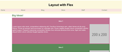
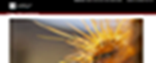

CSCE242
Molly Mason
- Assignment 1
- Assignment 3
- Assignment 3

This project was my first project about learning how to create a HTML website. It is focused on italian dishes.

This project was the first introduction into flex and queries. It allows you to adjust your page on different devices.

This project was to show mastering of CSS by recreating the College of Arts and Sciences home page.